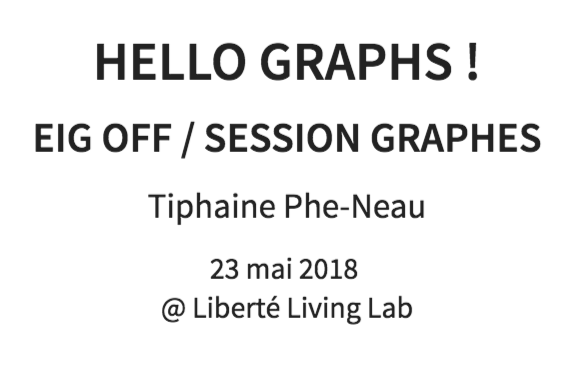
### Hello World ! Je m'appelle Tiphaine Phe-Neau :) - Data Scientist - EIG #2 au Ministère de l'Intérieur // Prévisecours - PhD en Informatique - @Dailymotion, @Clustree, @Saegus - 🏹 / 🧗🏽♀️ / 🍵 / `API` / `API[::-1]` - Doggos & Graphs enthusiast - <a href="https://twitter.com/datatiph" target="_blank">@datatiph</a>
### Graphes / Des questions? - A quoi servent les graphes ? - Dans quels cas peut-on utiliser les graphes ? - Dans quels projets, j’ai utilisé les graphes? REX ! - Qu’est ce qui compte pour réussir son projet graphe?
### AU DEPART: UN HOMME, UNE VILLE, UNE BALADE 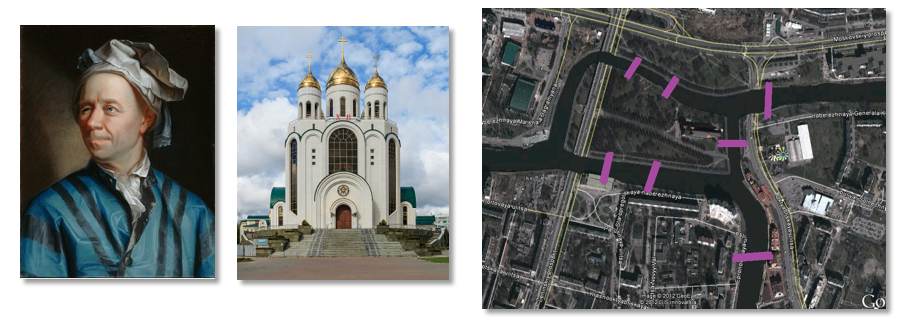
### UN PROBLEME, UN GRAPHE 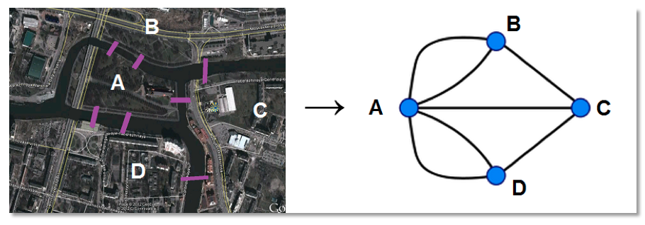
### UN POINT COMMUN 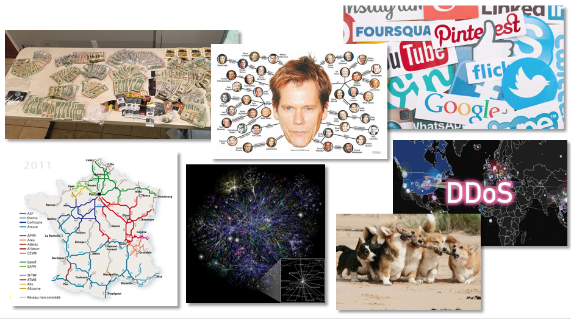
#### FOCUS DDOS ET TIME VARYING GRAPHS <img width="1050" style="background-color:white;border:0px;box-shadow:0" data-src="https://media.giphy.com/media/GLBU8EeZzNbKE/giphy.gif">
## SYLLABUS
### GRAPHES: TYPES <img width="950" style="background-color:white;border:0px;box-shadow:0" data-src="https://i.imgur.com/TNfxuXn.png" alt="EIG logo">
### GRAPHES: TYPES 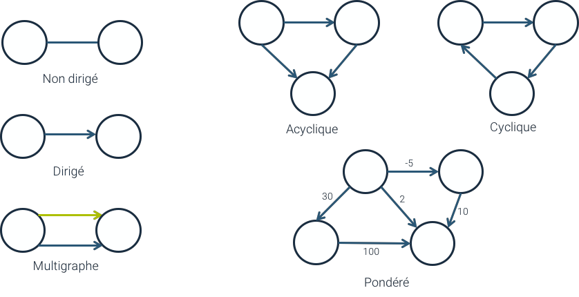
### GRAPHES: TYPES
### GRAPHES: TYPES 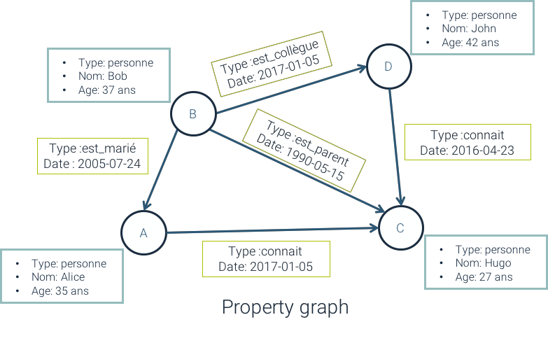
## USE CASES
### USE CASES - <p style="font-size: 30px">DETECTION DE FRAUDE</p> <p style="font-size: 26px">Pour le blanchiment d’argent la détection de cycle dans les transferts indique que l’argent injecté retourne à l’envoyeur. Celui-ci peut avoir plusieurs identités que les graphes aident à amalgamer.</p> - <p style="font-size: 30px">GOUVERNANCE DES DONNEES</p> <p style="font-size: 26px">Avec l’arrivée de GDPR en mai 2018, il est plus qu’important d’avoir une connaissance précise et à plusieurs niveau de votre utilisation. L’utilisation de multigraphes navigables est totalement adaptée.</p> - <p style="font-size: 30px">RECOMMANDATIONS / KNOWLEDGE GRAPH / SÉCURITÉ</p> <p style="font-size: 26px">Par la possibilité de lier des données précédemment silotées, nous observons facilement dans une même base, les similarités utilisateurs-utilisateurs, produits-produits, les liaisons entre concepts ou les dissonances d’identité en cas de phishing.</p>
- <p style="font-size: 30px">SOCIAL ANALYSIS / DIFFUSION D’OPINION</p> <p style="font-size: 26px">Les réseaux sociaux ont une structure qui se capte parfaitement par des graphes avec des hubs pour les éléments populaires, des liaisons multiples pour les connaissances de chacun. Nous pouvons observer la diffusion des opinions et comment la contenir.</p> - <p style="font-size: 30px">CUSTOMER 360</p> <p style="font-size: 26px">Dans la veine du désilotage des données, l’usage principal est de pouvoir lier et traverser des données de données initialement silotées de façon simple et efficace en temps de requêtage.</p> - <p style="font-size: 30px">...</p>
### Use cases graph-fit? - ✅ KEYWORDS: OUI, OUI ! - <p style="font-size: 26px">Beaucoup de relations différentes entre entités / Forte connectivité / Besoin de naviguer entre des données très disparates / Internet of Things / Modèle de données complexe / Besoin d’analyse et de détection en temps réel / >= 5 joins / L’innovation interne est handicapée par les bases de données actuellement en place / Besoin de réplication, de contrôle d’accès et distribution.</p> - ❌ KEYWORDS: NO, NOPE… - <p style="font-size: 26px">Les bases de données relationnelles classique fonctionnent bien / Besoins BI et analytique purs / Les données en jeu sont principalement statiques.</p>
### USECASE 1: CUSTOMER 360 <p style="font-size: 25px" align="left">Les bases graphes permettent d’avoir une vision complète autour des entités qui nous intéressent.</p> <p style="font-size: 25px" align="left">Dans le cas d’une base client, connaitre les propriétés du client est primordial et facilement faisable via une base SQL. Mais qu’en est-il des relations qu’il a par rapport à son entourage?</p>
### USECASE 1: CUSTOMER 360 <p style="font-size: 25px" align="left"> Mieux connaitre en temps réel les relations qu’a ce client avec d’autres élements permet de prioriser un traitement ou d’adapter une réponse d’un service client ou de pouvoir lui faire de meilleures recommandations produits.</p>
### USECASE 2 : DETECTION DE FRAUDE <p style="font-size: 25px" align="left">La détection de fraude nécessite une connaissance d’un très grand nombre de caractéristiques sur les entités concernées. Plus nous en avons, plus nous pouvons habilement détecter les anomalies. Cette pléthore de détails ne passe pas facilement à l’échelle pour les bases de données classiques.</p> <p style="font-size: 25px" align="left">Dans le cas de fraude financière, la possibilité de stocker en temps réel les transactions, les devices utilisés avec leur IP nous permet l’analyse de communautés interconnecté indiquant un risque de siphonnage de liquidités.</p> 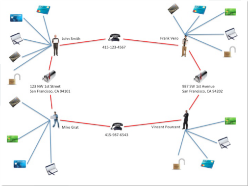
### USECASE 2 : DETECTION DE FRAUDE <p style="font-size: 25px" align="left">La détection en temps réel est un véritable défi pour les institutions bancaires. Ce défi correspond bien aux capacités des bases graphes. A posteriori, il est aussi facile pour le métier de remonter des réseaux frauduleux par simple requêtage de voisinage dans le graphe.</p> 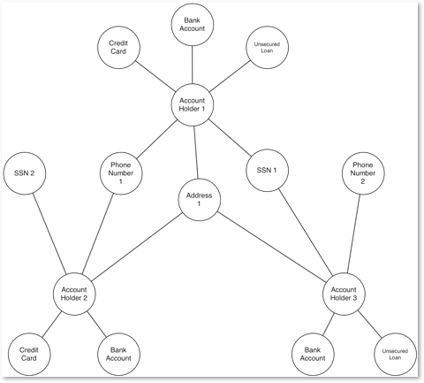
### USECASE 3 : GOUVERNANCE DES DONNEES <p style="font-size: 25px" align="left">L’arrivée à maturité des entreprises data driven et des datalakes nous pose maintenant la question de l’inventaire des données ainsi que de leur sécurisation.</p> <p style="font-size: 25px" align="left">Cette question se manifeste juridiquement en France par l’arrivée de mesures telles que GDPR (mai 2018) qui impose aux entreprises de pouvoir monitorer la localisation des données personnelles et de pouvoir indiquer comment elles sont utilisées.</p> 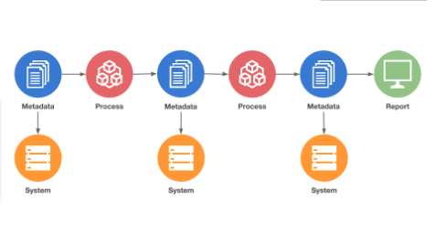
### USECASE 3 : GOUVERNANCE DES DONNEES <p style="font-size: 25px" align="left">Le lineage des données personnelles est adapté pour la modélisation par graphe de propriétés. Que ce soit la localisation, les transformations des données voir même le contrôle d’accès. Le côté visualisation permet un accès rapide et efficace pour chaque référent.</p> 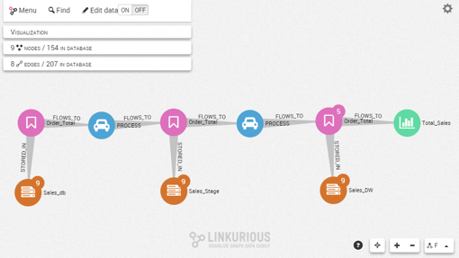
### REX !
### REX : RECO / GRAPH-BASED COLLABORATIVE FILTERING <p style="font-size: 25px" align="left">La recommandation a été l’un des sous domaines les plus actifs de la data science avec la création du Netflix Prize qui a stimulé les avancées du domaine. Le filtrage collaboratif permet de faire des recommandations basées sur des liens entre entités.</p> <p style="font-size: 25px" align="left">Et qui dit liens et relations, dit… Graphe !</p>
### REX : RECO / GRAPH-BASED COLLABORATIVE FILTERING <p style="font-size: 25px" align="left">Et qui dit liens et relations, dit… Graphe !</p> One liner en Gremlin g.V().has("customer", "customerId", "ALFKI").as("customer"). out("ordered").out("contains").out("is"). aggregate("products"). in("is").in("contains"). in("ordered").where(neq("customer")). out("ordered"). out("contains").out("is").where(without("products")). groupCount().order(local).by(values, decr). select(keys).limit(local, 5). unfold().values("name") <p style="font-size: 25px" align="left">Stack: Python + Neo4j + SQL</p>
### REX : DES RESEAUX DE SPAMMEURS <p style="font-size: 25px" align="left">Le but des spammeurs est de se faire passer pour des « personnes légitimes » afin de pouvoir en influencer d’autres en faisant croire que leurs contributions sont légitimes.</p> <p style="font-size: 25px" align="left">Des patterns peuvent mettre la puce à l’oreille: un utilisateurs récent avec de nombreuses contributions. Mais c’est moins évident à détecter lorsqu’ils ne sont pas isolés. Mais… Ils ont souvent des cliques avec de nombreux arcs sortant mais peu d’entrants.</p> 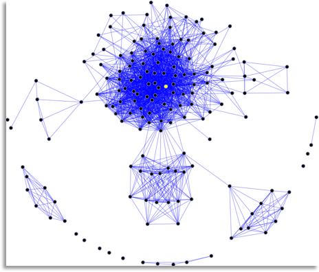
### REX : DES RESEAUX DE SPAMMEURS <img width="400" style="background-color:white;border:0px;box-shadow:0" data-src="https://media.giphy.com/media/3o6gbchrcNIt4Ma8Tu/giphy.gif"> <p style="font-size: 25px" align="left">Dans ce cas, les graphes permettent de visualiser les groupes d’utilisateurs et les cliques facilement. Par analyse des comportements et des centralités, des groupes peuvent être détectés comme dissonant.</p> <p style="font-size: 25px" align="left">Stack: Python + NetworkX + SQL</p>
### REX: MODELISATION DES INTERACTIONS <p style="font-size: 25px" align="left">Est ce que ça ne va pas prendre 6 mois avant d’obtenir une version exploitable? Voici une visualisation utilisant des données de production réalisée en < 10 jours et reproduisant dans un périmètre ISO des requêtes complexes faites sur le Datalake via Hadoop.</p> 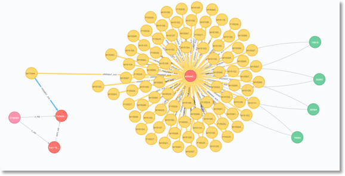
### REX: MODELISATION DES INTERACTIONS <p style="font-size: 25px" align="left">La conception et la liberté du modèle graphe laisse libre court à la pensée et à tout type de requêtage. </p> <p style="font-size: 25px" align="left">Le secret d’une base graphe efficace est sa modélisation initiale: quels éléments sont des noeuds, lesquels sont des relations? Nous créons un modèle de données pour résoudre un problème précis. </p> <p style="font-size: 25px" align="left">La beauté du graphe vient de sa capacité à être étendu par la suite.</p> <img width="400" style="background-color:white;border:0px;box-shadow:0" data-src="https://media.giphy.com/media/xT4uQF7h39mlsF5czK/giphy.gif"> <p style="font-size: 25px" align="left">Stack: Python + Neo4j + Bash</p>
### TECHNOS & DOC 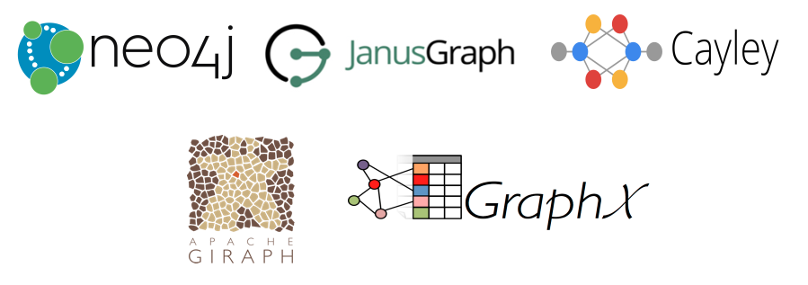 <a href="https://github.com/onurakpolat/awesome-bigdata#graph-data-model" target="_blank">`https://github.com/onurakpolat/awesome-bigdata#graph-data-model`</a>
### TAKE AWAY <img width="700" style="background-color:white;border:0px;box-shadow:0" data-src="https://media.giphy.com/media/FDLp6PLgC9wWs/giphy.gif" alt="Take Away meme">
### Les questions - A quoi servent les graphes ? - Dans quels cas peut-on utiliser les graphes ? - Dans quels projets, j’ai utilisé les graphes? - Qu’est ce qui compte pour réussir son projet graphe?
### TAKE AWAY <p style="font-size: 30px" align="left">- A modéliser une vue de l’esprit multidimensionnelle et évolutive, à relier facilement des données auparavant silotées ou issues de domaines différents</p> <p style="font-size: 30px" align="left">- De nombreux use cases mais pas tous ;) tout dépend de la modélisation des données</p> <p style="font-size: 30px" align="left">- Dans de la reco, de la détection de fraude, de la proximité sémantique, de la gouvernance de données et en features de modèles machine learning: sky is the limit !</p> <p style="font-size: 30px" align="left">- Ma best practice: itérez sur vos modèles de données pour répondre à des questions précises et surtout amusez-vous !*</p> <p style="font-size: 30px" align="right">* Attention à vos config mémoire quand même :D</p>
### CONTACT <a href="mailto:tiphaine@phe-neau.com" target="_blank">`tiphaine@phe-neau.com`</a> <a href="https://twitter.com/datatiph" target="_blank">@datatiph</a> <img width="300" style="background-color:white;border:0px;box-shadow:0" data-src="https://media.giphy.com/media/yoJC2GnSClbPOkV0eA/giphy.gif">
Et vous, <br> vous avez des idées de <br> usecase graphes ?